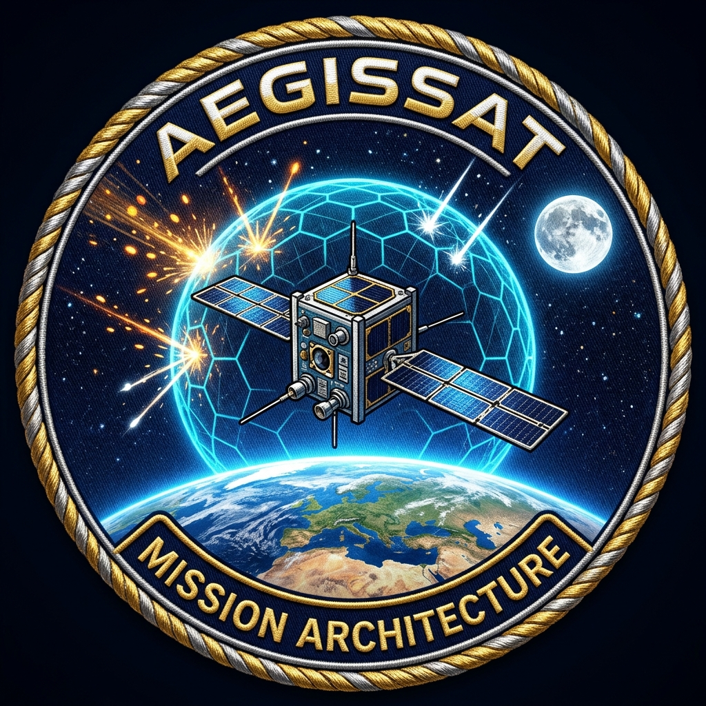
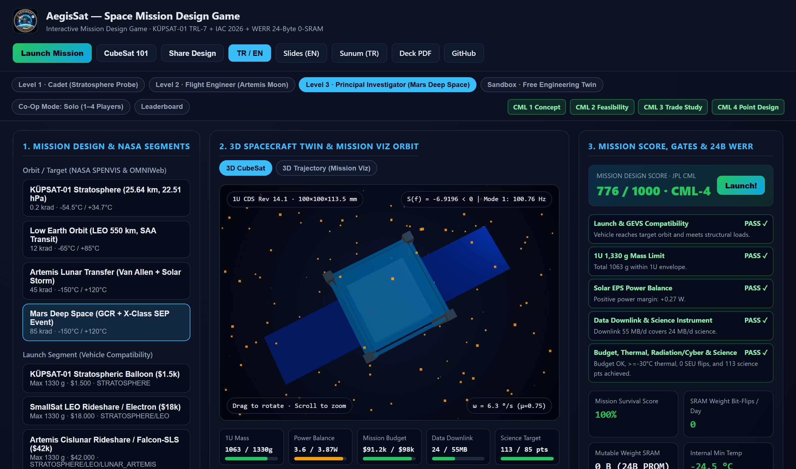
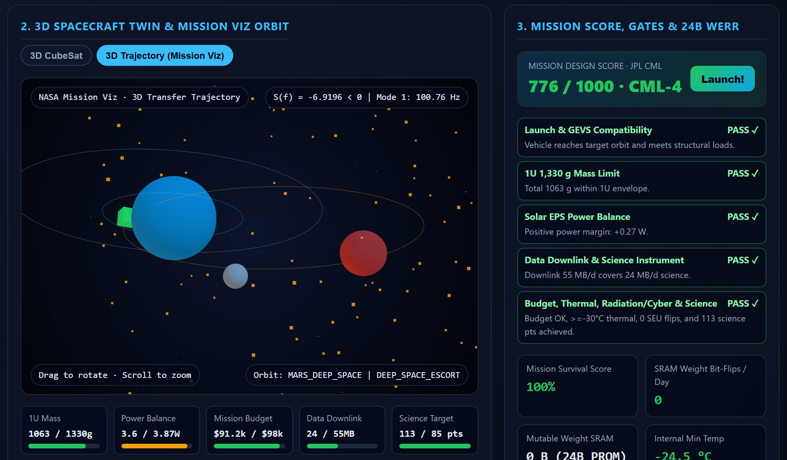

Mission Patch (SI-Assisted)An interactive solo & 4-player co-op spacecraft design game uniting KÜPSAT-01 TRL-7 heritage, IAC 2026 shielding, and WERR 24-Byte Zero-SRAM physics across Launch, Space, Ground & User segments.
https://aegissat.space
4-Player MDL Co-Op + Mission Viz 3D
KÜPSAT-01 TRL-7 (7 Aug 2026) & IAC-26-C2.IPB.29 Antalya
Bekirhan Dağlı (Flight Lead) · Emrah Yurtseven (WERR AI/IP) · Burak Salar (Sim & Data)
Under Mars Deep-Space GCR + X-Class Solar Proton Storms, 64 MB volatile AI weight SRAM on unshielded Al-6061 suffers 234 flips/day, silently corrupting attitude & fault control.
KÜPSAT-01 recorded ~20 G separation shock and 3,647.58 °/s tumble. Standard Al-6061/COTS buses freeze down to -141.5 °C internal temp and lose 64 Hz modal margin under 14.1 Grms.
7 Aug 2026 mission: 22.51 hPa min pressure, -54.50 °C exterior vs -17.27 °C internal (+37.23 °C passive thermal differential).
Al7075-T6 / CFRP + Hexagonal Honeycomb sandwich: 18.49 MPa von Mises, 0.254 mm deflection, Mode 1 = 100.76 Hz (GEVS 14.1 Grms), FS = 27.20.
Complete WERR Hybrid bus is 373 g (957 g payload margin out of 1,330 g 1U limit) at $8,300 total vs $42,800 for heavy 775 g Rad-Hard TMR avionics.
IAC passive MLI/honeycomb insulation (+37.23 °C gain) paired with a thermostatically regulated 0.50 W survival heater (0.85 W total bus in deep space) keeps internal electronics ≥ -24.5 °C (safe above -30 °C limit) at -150.0 °C ambient.
Negative Schwarzian S(f)(0) = -6.919 < 0 & Koenig multiplier μ = 0.75 damp 3,647.58 °/s energy by 94.37% in 10 cycles vs PID 63.15% or SEU-degraded ARM 29.97%.
TR 2026/016633 hardware gate strictly vetoes unstable controller gains (|r| ≥ 2.4046) and locks μ = 0.75 before actuator saturation.
TR 2026/020266 Collatz Parity Lyapunov barrier isolates injected spoofing bursts whenever γ = n_odd / n_even > 0.58496.


#design= URLs./api/space-weather): Live GOES ≥10 MeV protons, Planetary Kp & OMNIWeb/SPENVIS radiation envelopes.| Architecture | Weight SRAM | SEU Flips/Day | 10-Cycle ADCS | Min Temp | Power / Cost | 1U Margin | Game Score / CML |
|---|---|---|---|---|---|---|---|
| Al-6061 + 64 MB ARM SRAM | 64 MB | 234.0 | 29.97% (SEU) | -141.5 °C (Freeze) | 4.20 W / $3,600 | 730 g | 20 pts · CML-1 FAIL |
| CFRP + Rad-Hard TMR CPU | 16 MB | 0.0 | 63.15% (PID) | -129.0 °C (Freeze) | 8.50 W / $42,800 | 555 g | 262 pts · CML-2 FAIL |
| AegisSat Hybrid + WERR 24B | 0 B PROM | 0.0 | 94.37% (μ=0.75) | -24.5 °C (OK) | 0.85 W / $8,300 | 957 g | 776 pts · CML-4 (100%) |
Open-source Mission Design Game, Python/JS bit-exact core, KÜPSAT-01 replay & patents live at https://aegissat.space · github.com/bdagli-web/aegissat
07 / 07